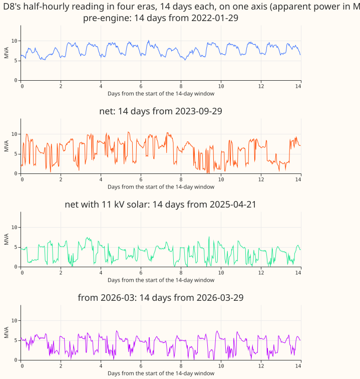
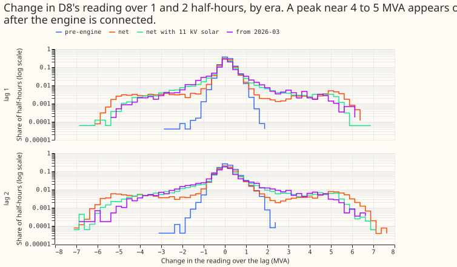
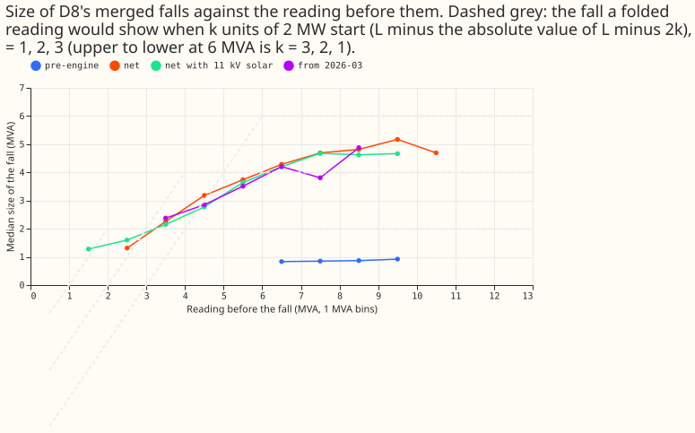
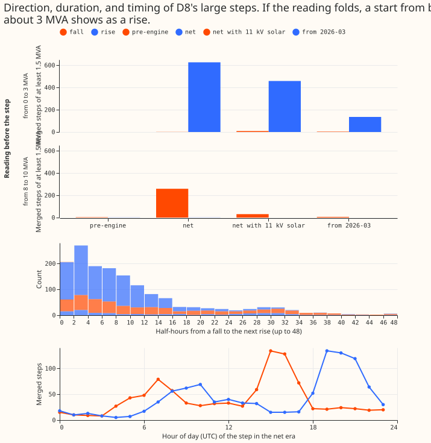
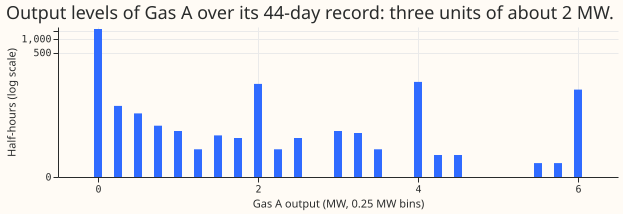
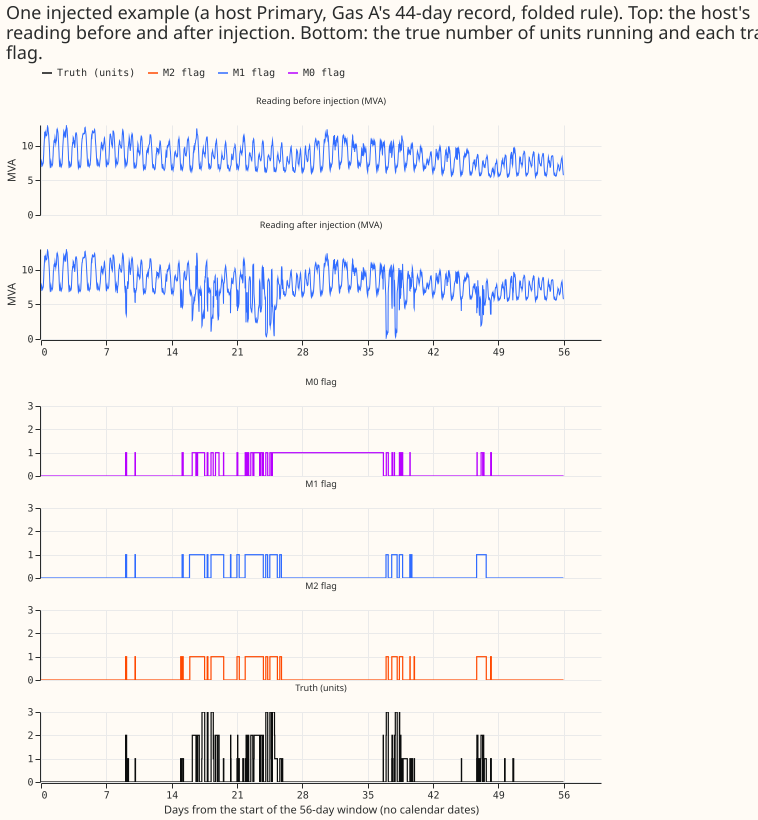
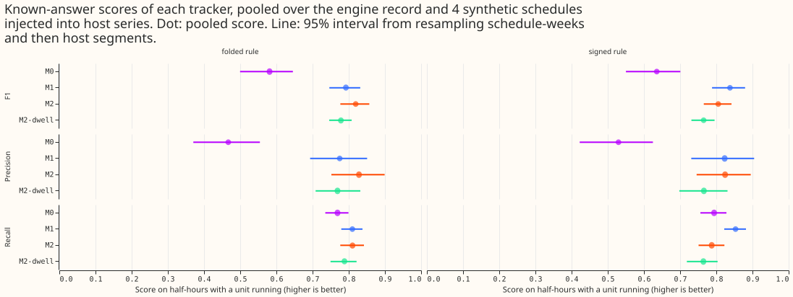
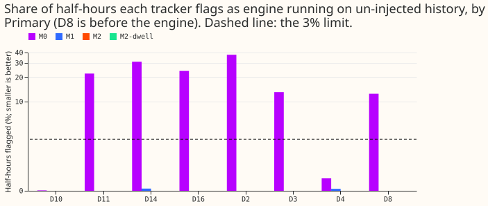
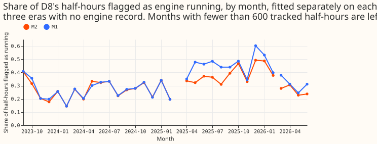

Can the on/off state of the gas engine at D8 be tracked from the substation's raw half-hourly reading alone, with the number of units and the unit size inferred?
The tracker scores F1 0.68 on the one real engine record we hold, and higher on easier synthetic schedules. We asked whether the number of gas-engine units running at a substation (0 to 3), and the size of each unit, can be inferred from the substation's own reading, with no price, no weather, and no forecast of ordinary demand to subtract. The test case is D8, a primary substation (a "Primary") whose reading is half-hourly apparent power in megavolt-amperes (MVA) and which has a gas engine of three units connected nearby. A metered gas-engine generator, labelled "Gas A", has its own output recorded for about 44 days (2,054 half-hours). We subtracted that recorded output from the readings of other Primaries, which makes a known answer ("injection"), and scored each tracker half-hour by half-hour with the F1 score (the harmonic mean of precision and recall of the flag "a unit is running"). On Gas A's record alone the best tracker scores F1 0.68 (precision 0.61, recall about 0.76); pooled with four synthetic schedules built from the record, it scores 0.82. The tracker flagged none of the half-hours of the same Primaries without injection. The trackers extend the load-disaggregation idea of Hart (1992) and Kolter and Jaakkola (2012), in which a hidden state for each appliance is read from the total.
The pre-registered table reads supported, and the recorded verdict is partly supported,
because an audit found the gate was not robust. The pre-registered table passes every probe, with
thin margins: the best tracker (M2, a filter over demand level and units running; M0 pairs steps and
M1 is a count model, both defined in Method; K is the number of units and u the unit size) scores F1
0.819 under the folded rule and 0.805 under the signed rule, against a bar of 0.80. The audit (by a
fresh Sonnet agent, using its own scoring code) reproduced every stored count and then found three
problems. First, the real record alone scores 0.68, because the 4 synthetic schedules are easier
than the record (an idealised record, with output exactly a whole number of units, scores only 0.735
too). Second, the fold (the assumption that the apparent-power reading folds when demand is near the
engine's output) has no demonstrated benefit: removing it changes the record's F1 by +0.017 under
one injection rule and -0.014 under the other, and both intervals include zero. Third, the fitted
unit size is a coarse-grid result: on a 0.05 MW grid the fit for D8 is 1.65 MW, below the
pre-registered range of 1.7 to 2.3 MW, and the engine record's own unit size is 1.97 MW. This
reading is post hoc, and with it P1 fails, which gives partly supported.
On D8 itself, without any engine record, the tracker finds three units and flags 27% of half-hours
from 2023-09 to 2025-02. The fit gives K = 3 units of 1.75 MW (on a 0.25 MW grid). Using a wider
range of unit sizes, three units beat one 5 MVA block by about 2,500 on the Bayesian information
criterion, so the cap of three units does not create this answer. The fold explains the step
directions at low demand: from a level below 3 MVA, 626 of 627 large steps are rises. Fitting
without the fold changes the flagged share only from 0.268 to 0.267. From 2025-03-24, when 11 kV
solar was connected, the fitted size moves to 2.25 MW (a move of 0.50 MW on the coarse grid, exactly
the pre-registered limit, and about 0.7 MW on the fine grid, which would trigger the inconclusive
rule if applied post hoc). The cause of the move is untested. After 2026-03 the fit changes to 2
units of 3.5 MW. That change is consistent with experiment 194's finding that the engine fades from
D8's reading in 2026, but the count model does not show it.
On the one 1 MW schedule we tried, the tracker almost never finds the units. M2's F1 on injected 1 MW units is 0.12, and it chose "no engine" in 31 of 44 segments, On that one 1 MW schedule, M2 chose at least one unit in only 13 of 44 segments.
All five pre-registered probes (P1 to P5) hold at their pre-registered reading.
| Probe | Prediction | Result | Holds |
|---|---|---|---|
| P1 | K = 3 and a unit size of 1.7 to 2.3 MW on D8, 2023-09 to 2025-02 | K = 3, 1.75 MW (1.65 MW on a 0.05 MW grid, post hoc) | yes at the pre-registered grid; no on the fine grid |
| P2, folded rule | F1 ≥ 0.80, precision ≥ 0.80, recall ≥ 0.80 at 2 and 3 units and ≥ 0.50 at 1 unit, switch error ≤ 1 half-hour | 0.819, 0.828, 0.87 and 0.87, 0.72, median 0 (0.71 of true switches matched) | yes |
| P2, signed rule | same | 0.805, 0.824, 0.85 and 0.86, 0.68, median 0 (0.72 matched) | yes |
| P3 | At most 3% of half-hours flagged and at most 1 active day a month on history without injection, at each of 8 Primaries | 0.00% and 0.00 days at all 8 | yes |
| P4 | M2 beats M0 by at least 0.10 F1, with an interval above zero | +0.238 (folded), +0.170 (signed) | yes |
| P5 | The fold predicts held-out months of D8 better | better in 9 of 9 months, +51.6 log-likelihood units | yes |
Results
Phase A: D8's engine appears as steps of about 5 MVA, and the direction depends on the level. The engine record reproduces experiment 194's counts exactly (1,704, 137, 133, and 80 half-hours at 0, 1, 2, and 3 units, of 2,054), and one unit puts out 1.97 MW. The record holds 55 running spells (experiment 194 counted 56), with a median of 4 half-hours. D8's reading has steps of about 5 MVA only after the engine connected (Figure 2). The fall that follows an engine start grows with the reading before it, as a folded reading predicts (Figure 3). From a level below 3 MVA, 626 of 627 merged steps of at least 1.5 MVA in 2023-09 to 2025-02 are rises. From 8 to 10 MVA, 259 of 260 are falls (Figure 4). No local maximum of the step histogram sits at 1.75 MW or 3.5 MW, so three units of 1.75 MW is a model fit and not a visible pattern.





Phase B: known answers. Figure 6 shows one injected segment. Figure 7 gives the scores pooled over the engine record and four synthetic schedules, which are built by resampling the record's runs. The intervals are 95%, from resampling schedule-weeks and then segments.
| Tracker | F1, folded rule | F1, signed rule | Precision (folded) | Recall (folded) |
|---|---|---|---|---|
| M0, difference pairing | 0.581 [0.500, 0.646] | 0.635 [0.550, 0.701] | 0.467 | 0.769 |
| M1, count model on differences | 0.792 [0.746, 0.832] | 0.838 [0.788, 0.880] | 0.775 | 0.810 |
| M2, grid filter | 0.819 [0.777, 0.857] | 0.805 [0.765, 0.842] | 0.828 | 0.810 |
| M2-dwell, grid filter with a minimum dwell | 0.778 [0.746, 0.808] | 0.765 [0.731, 0.795] | 0.769 | 0.788 |
"Folded rule" and "signed rule" are the two ways of subtracting the engine's output from a Primary's reading. The folded rule subtracts it from the real power behind the reading and reads the result back as apparent power. The signed rule subtracts it from the reading directly.


The three planned contrasts, at 98.3% (Bonferroni for three), are in the table.
| Contrast (difference in F1) | Folded rule | Signed rule |
|---|---|---|
| C1, M2 minus M0 (threshold +0.10) | +0.238 [+0.153, +0.352] | +0.170 [+0.083, +0.288] |
| C2, M2 minus M1 (threshold 0) | +0.027 [+0.009, +0.047] | -0.032 [-0.049, -0.013] |
| C3, M2-dwell minus M2 (threshold 0) | -0.041 [-0.069, -0.018] | -0.040 [-0.067, -0.018] |
M0 is a weak baseline, because after a large fall it stays flagged until a matching rise, so it flags 12.6% to 37.6% of half-hours without injection at six of the eight Primaries. The fair comparison is M1, and M1 and M2 nearly tie: C2 changes sign with the injection rule. The minimum dwell of 2 half-hours lowers the pooled F1 under both rules, but on the record alone M2-dwell scores slightly higher than M2 (0.686 against 0.678 folded, 0.679 against 0.675 signed), so the pooled loss comes from the synthetic schedules.
Schedule by schedule (M2, folded rule), the tracker finds engines of 2 MW and 3 MW units, and it misses 1 MW units.
| Schedule | Units and size | M2 F1 | Segments where M2 chose K = 0 |
|---|---|---|---|
| Gas A record | 3 units of 1.97 MW | 0.678 | 0 of 44 |
| Synthetic, seeds 0 to 3 | 3 units of 2 MW | 0.835 to 0.889 | 0 of 176 |
| Synthetic, seed 4 | 3 units of 1 MW | 0.116 | 31 of 44 |
| Synthetic, seed 5 | 3 units of 3 MW | 0.872 | 0 of 44 |
| Synthetic, seed 6 | 1 unit of 2 MW | 0.695 | 6 of 44 |
| Synthetic, seed 7 | 2 units of 2 MW | 0.858 | 0 of 44 |
Where the tracker finds the engine, the fitted unit size is near the true size on the 0.25 MW grid: 2.00 MW for 2 MW units, 3.00 MW for 3 MW units, and 1.00 MW for 1 MW units. For the record, 36 of 44 segments choose 1.75 MW, against a true 1.97 MW. The audit found that the log-likelihood profile over unit size has a dip at 2.0 MW and further modes beyond it.

On real D8, the fitted size and the share flagged shift when the 11 kV solar was connected.
| Era of D8 | M2 units and size | M2 share flagged | M1 units and size | M2 without fold units and size |
|---|---|---|---|---|
| 2023-09 to 2025-02 | 3, 1.75 MW | 0.268 | 3, 1.75 MW | 3, 1.75 MW |
| 2025-03-24 to 2026-02 | 3, 2.25 MW | 0.384 | 3, 1.50 MW | 3, 1.50 MW |
| 2026-03 to 2026-06 | 2, 3.50 MW | 0.262 | 3, 1.50 MW | 3, 1.75 MW |

K1 is D8's own 44-day reading with Gas A's record subtracted; it does not decide, because D8's reading already holds whatever D8's own engine did, and Gas A is a separate metered engine, so some of the false positives may be real running. M2 scores F1 0.769 (284 true positives, 105 false positives, 66 false negatives), M1 0.731, M2-dwell 0.709, and M0 0.534.
Checks
- Median forecast minus mean forecast, and the error of the mean or median forecast beside each quantile-score contrast: not applicable, because the experiment forecasts nothing.
- Leave one Primary out (trigger 4): C1 stays between +0.227 and +0.245 (folded) and between +0.156 and +0.213 (signed). C2 stays positive (+0.006 to +0.034) under the folded rule and negative (-0.007 to -0.039) under the signed rule. No sign changes.
- Triggers that fired, and the audit. Trigger 1 (a known-answer test fails): the real record
alone misses the F1 bar (0.678 folded, 0.675 signed), the 1 MW schedule scores 0.12, and K1 scores
0.77. Trigger 5 (a simpler arm beats the arm that contains it, or a control moves the score): M1
beats M2 under the signed rule, and the fold barely changes D8's fit. Trigger 7 (a later design
depends on the result): the inventory project would. A fresh Sonnet agent audited the experiment
with its own scoring code, and its report is in the private
data/ml-experiments/briefs/e694_audit/folder. - Audit findings and how each was triaged.
- Accepted: the stored counts replicate exactly. The audit's own injection, window offsets, truth, and week clusters matched all 264 stored comparisons (44 segments, both rules, M0, M1, M2).
- Accepted: the pooled F1 overstates the tracker. The write-up now leads with the real record's F1 of 0.68. An alternative truth (output above 0.3 MW counts as running) raises the record's precision only from 0.615 to 0.655 and leaves F1 unchanged, and an idealised record scores 0.735, so the cause is the record's switching structure and not ramps.
- Accepted: the fold has no demonstrated benefit. Without the fold, the record's F1 changes by +0.017 (folded rule, 95% interval -0.006 to +0.041, fold wins 19 of 44 segments) and -0.014 (signed rule, -0.041 to +0.011, 11 of 44). The take-home no longer claims a benefit.
- Accepted: the unit size is a coarse-grid result. On a 0.05 MW grid, D8's fit is 1.65 MW,
and the move between eras is about 0.7 MW. The write-up reports this as a post hoc reading and
the verdict becomes
partly supported. The experiment did not rerun P1 on the fine grid. - Accepted, and the control run by the audit: zero false alarms are not only "no engine" selection. Forcing 3 units at 1.75 MW or 2.0 MW on the 44 segments without injection flags a mean of 0.1% of half-hours (maximum 1.9%).
- Accepted: three units beat one 5 MVA block. With a unit-size grid to 6.5 MW, the information criterion prefers 3 units by about 2,500 on D8 and by 60 to 350 on injected segments.
- Deferred to the next experiment: a harder, record-like synthetic schedule, and a grid of 0.05 MW in the fits.
- Fold versus no fold on real D8: the fold predicts held-out months better in 9 of 9, by 51.6 log-likelihood units in total, but the fitted units, size, and flagged share are almost the same with and without it (0.268 and 0.267).
- Code review: a fresh Sonnet reviewer found one blocking bug (the backward pass used the transpose of the level kernel, so smoothed marginals were wrong near zero demand) and eight advisory points. The bug is fixed before every number on this page. Seven of the eight advisory points were applied. The eighth is left as designed: matching a true switch to the nearest flagged switch of either direction. The share of true switches matched (0.62 to 0.82) is reported beside the median error.
- Write-up and prose reviews: two fresh Sonnet reviewers found no number that disagrees with the printed reports. Their findings on overclaims, undefined terms, and pronouns are applied, except where a finding would have repeated a statement made above.
Deviations from the plan
- A penalty on running time was added after one smoke test. The first test on one Primary showed that differences alone cannot tell "0 units" from "1 unit held all the time", and the count model learned "one unit on" as its resting state (5,238 of 5,760 half-hours). Every fit now multiplies each half-hour's likelihood by exp(-0.02 k) for k units running. The penalty leans the Bayesian information criterion towards K = 0 (about 17 log-likelihood units for 5% running over 5,760 half-hours). The audit's forced-3-unit control shows the zero false alarms hold without that selection.
- The prior transition matrix has a stay probability of 0.995, not 0.9. With 0.9, a first smoke test chose K = 0 on an injected segment, because each half-hour in the same state costs log 0.9 once the model allows switches.
- K and u are selected in two steps, not by a full grid. The unit size is profiled at K = 3, then K = 0 to 3 are each refitted by 3 rounds of expectation-maximisation at that unit size.
- The reactive floor q is fixed at 0.14 MVA and is not fitted.
- The verdict table has a default branch. Any combination the plan did not list is
not supported. No result fell into it. The verdictpartly supportedfollows the audit's post hoc fine-grid reading, as set out above. - K1 uses the same injection code as the other segments (both rules), and it is placed by timestamp. The record has one gap of 12 half-hours, which is not scored in K1. The host segments use the record as stored, so their schedule is shorter by the gap.
- P5 holds if the total difference is above zero and the fold wins at least two thirds of the held-out months, a definition fixed in the scoring code before the result was read. The held-out months are the even-numbered months counted from 2023-09. P5's likelihood leaves out the penalty on running time.
- One D16 segment was dropped because under 90% of its half-hours were present, leaving 44 segments.
What the next experiment should answer
The tracker is not yet good enough to trust on its own, and four questions remain open. Does a fit on a 0.05 MW grid change the unit size? How does the tracker score on a harder synthetic schedule built with the real record's ramps and part load? Are the engines registered in the Embedded Capacity Register found, and no others, at Primaries the tracker has not seen? What happens to a unit of 1 MW? The maintainer proposed a further use: if the engine is tracked well, subtract it from the series, train the demand forecaster on the cleaned series, and add back a climatology of the engine at forecast time. That use needs the tracker's recall to be high, and it fails if the engine responds to something predictable other than price that the climatology cannot reproduce.
Method
Architecture: the design of each tracker.
- All four trackers read only the segment's reading in MVA, with a causal spread of the lag-1 difference: 1.4826 times the median absolute difference at the same half-hour of the day over the previous 28 days (at least 7 earlier days, floor 0.03 MVA), rounded to one of 8 log-spaced levels.
- M0 merges consecutive same-sign differences that each exceed 4 spreads, opens a spell at a merged fall of at least 1.5 MVA, and closes it at the next merged rise of at least half the fall.
- M1 is a hidden Markov model on the number of units k (0 to 3). The lag-1 difference is -(change in k) times u plus Student-t noise (4 degrees of freedom) at the spread. Any jump in k is allowed.
- M2 is a grid filter on the demand level L and k. L lies on a 0.1 MVA grid from 0 to 22 MVA and does a random walk with Student-t steps (4 degrees of freedom) at the spread. The reading is sqrt((L - k u)^2 + q^2) with q = 0.14 MVA, plus Student-t noise with scale 0.08 MVA. The forward pass costs O(T K G) for G = 221 grid points.
- M2-dwell expands the state to k and an age (1 or at least 2 half-hours), so that k cannot change twice in successive half-hours. This is an explicit-duration model in the sense of Yu (2010), with the shortest possible minimum duration. It reuses the units and size that M2 selected for the same segment.
- A half-hour is flagged when the smoothed probability that k is at least 1 exceeds 0.5. The filtered (online) flag is stored too.
- No tracker uses a demand forecast, the price, the weather, or Gas A's record when it fits.
Training regime: how each tracker is fitted, and on what.
- Each segment is fitted on its own reading. The unit size u is profiled over 0.5 to 3.5 MW in steps of 0.25 MW at K = 3. Then K = 0 to 3 are refitted by 3 rounds of expectation-maximisation at that size and compared by the Bayesian information criterion. Then 5 rounds of expectation-maximisation fit the transition matrix, with a prior of 5 pseudo-counts.
- The synthetic schedules resample the record's runs (a unit level and a duration) with replacement. Seeds 0 to 3 give 3 units of 2 MW and decide the pooled score. Seeds 4 to 7 give 3 units of 1 MW, 3 units of 3 MW, 1 unit of 2 MW, and 2 units of 2 MW, and are reported only.
- Segments: 28 days of history for the spread, then 120 tracked days, with the schedule injected from day 38. The first period ("pre-solar") has 3 consecutive segments per Primary from 2022-01-01, before the 11 kV solar connected near D8. The second period ("solar") has 3 from 2025-04-01. The Primaries are D3, D4, D11, D14, D16, D2, and D10. D8 has 3 segments before the engine connected on 2023-06-13.
- No GPU was used. The false-alarm pass took about 7 CPU-minutes and the injections about 4 CPU-hours, on 24 cores.
Measurement: how the trackers are scored.
- Two injection rules (folded and signed, defined above) are run on every segment.
- Scored: half-hour F1, precision, and recall for "any unit running" in the injected window, recall by the number of units truly running, and the distance in half-hours from each true switch to the nearest flagged switch (within 6).
- Intervals: 10,000 cluster-bootstrap draws. A cluster is one schedule-week (7 per schedule), resampled with replacement, and segments are resampled within each drawn cluster. Contrasts are read at 98.3%.
- False alarms are scored on the same segments without injection: the share of half-hours flagged, and the days with at least 4 flagged half-hours.
- The engine record's own counts are checked before any tracker runs, and the check passed.
- P5: fit on the odd months and score on the even months of D8's 2023-09 to 2025-02 era, with the fitted parameters frozen.
Files
ml-experiments/00694-gas-engine-state-tracker-part-1/e00694_common.py: paths, constants, loaders, the two injection rules, the causal spread, and the metrics.e00694_trackers.py: M0, M1, M2, and M2-dwell.e00694_look.py: Phase A figures 1 to 5, and the Phase A printout (printed_look.txt).e00694_run.py: the false-alarm pass, the injections, K1, the example segment, the real D8 eras, and P5. Writes pickles underdata/ml-experiments/00694-gas-engine-state-tracker-part-1/.e00694_report.py: scoring, the cluster bootstrap, the verdict table, figures 6 to 9, andprinted_report.txt.data/ml-experiments/briefs/sw_false_alarms/work/arrays.pkl: the residual panel that experiment 196 stored (apowerarray per site, half-hourly from 2022-01-01). Read only. The Primaries' and D8's readings come from it.- The engine's 44-day record: the window table that experiment
194
stored in its data folder (columns
time,power,price,units). Read only. It is never published with dates. data/ml-experiments/00694-gas-engine-state-tracker-part-1/{fa,inject,k1,example,d8,p5}.pkl: stage outputs written bye00694_run.py. Written, private.data/ml-experiments/briefs/e694_audit/e694_audit.md: the audit report, with its scripts. Private.